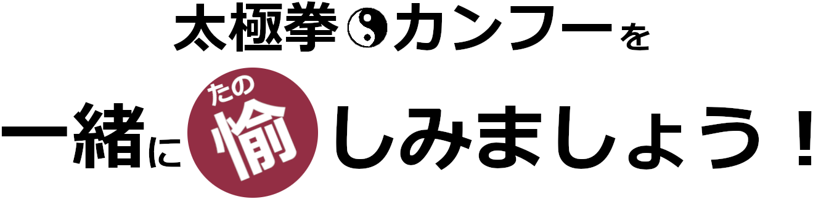

「運動不足やストレス解消」「新たな趣味探し」「太極拳に興味が」「カンフー映画大好き」などなど、きっかけや目的は人それぞれ・・・。 初めての人はもちろん、運動が苦手な方でも大丈夫。子どもから高齢の方々まで、年齢性別問わず楽しむことのできる『武術太極拳』。
私達と一緒に楽しみませんか？
拳術紹介
多くの拳術・武器がある中で、今現在国際競技種目となっているものについて、ここで簡単に紹介します。（今後、随時紹介していきます）
太極拳
「太極拳」の起源は諸説ありますが、明代末から清代初期ともいわれ、陰陽（対立と統一という二面性）の思想に基づいて成り立っています。その歴史の過程で、「陳式・楊式・呉式・孫式」などの伝統的な流派が生まれました。
「太極拳」は、円の動きを基本とした全身運動と重心の移動をコントロールする中で、無駄な力を用いず、ゆっくり伸びやかで柔らかく動きます。呼吸は動作に合わせて自然に行うことで、気血を整え、リラックスしながら動くので、老若男女だれにでも楽しむことができます。練習を重ねることで、下肢の鍛錬やバランス感覚を養え、また神経系や呼吸器・消化器官系などの働きの向上につながり、すべての人達に均しく心身の健康をもたらすことができます。
太極拳の基礎を生かした「太極剣」「太極刀」などの武器種目もあります。

長拳
「長拳」は、中国北方で発展していった「査拳・華拳・少林拳」などの拳術の総称で、現代においては競技スポーツの性格が強い武術といえます。動作は伸びやかでスピーディ、打つ・蹴るといった攻防動作を中心に、バランス動作・跳躍動作も多く含まれています。
長拳筋力・持久力・敏捷性・協調性・柔軟性など身体能力全般の向上を図ることが出来るため、青少年に適した武術といえます。
一方で、中国の武術全般の基礎要素を多く含んでいるので、無理のないペースで練習することで、太極拳や伝統拳などの学習者にとっても、また一般の愛好者にとっても、フィットネス効果や身体の使い方の理解も深められる側面もあって多くの人達に親しまれています。
この長拳の基礎を用いた、中国の代表的な武器と言われている「刀術」「剣術」「棍術」「槍術」などの武器種目もあります。
南拳
「南拳」は中国南方で行われてきた拳術の総称で多くの流派があり、その一部は日本の空手の源流といわれています。代表的なものに「洪家拳・白鶴拳・詠春拳」などがあり、主に広東省や福建省の南拳が華僑などを通じて広く世界に広まりました。
特徴は、気を沈め腹部を充実させながら、力強い歩型・歩法から両腕を巧みに使った手技が多く、荒々しく力を出し、時に気合を発したりします。
この南拳の基礎を用いた、「南刀」「南棍」などの武器種目もあります。